Motion design.
Light, not bounce. A gold point travels a beam through the dark room and whatever it passes is revealed. Four durations, four curves, left to right, arrive fast and settle long.
- 23.1Principles and the timing scale
- 23.2Easing curves
- 23.3Logo reveal and outro · key frames
- 23.4Lower thirds, intro, outro, transition
- 23.5Logo animation rules and delivery
Light, not bounce.
Light has no mass. It does not overshoot, spring, wobble, spin or stretch. It arrives quickly and settles slowly; it glows; it leaves without a sound. From 11_MOTION_GRAPHICS/Motion_Principles.md.
| Token | Duration | Use |
|---|---|---|
| --t-fast | 200 ms | A point appears, a word arrives, a hover responds, a stroke fades after a fill |
| --t | 400 ms | The standard entrance: a line rises, a label settles, a letter blooms, an element sinks out |
| --t-slow | 800 ms | The lamp rises, a beam grows, a glow pulses once, a plate wipes in |
| --t-reveal | 1100 ms | The reveal: the point travels the full beam, the light wipes a quote, photography settles |
Staggers: words 160 ms apart, lines 150 ms; the four steps of the route light when the light reaches them. In a 4 s reveal 1.2 s is hold; in a 5 s lower third 2.9 s is hold.
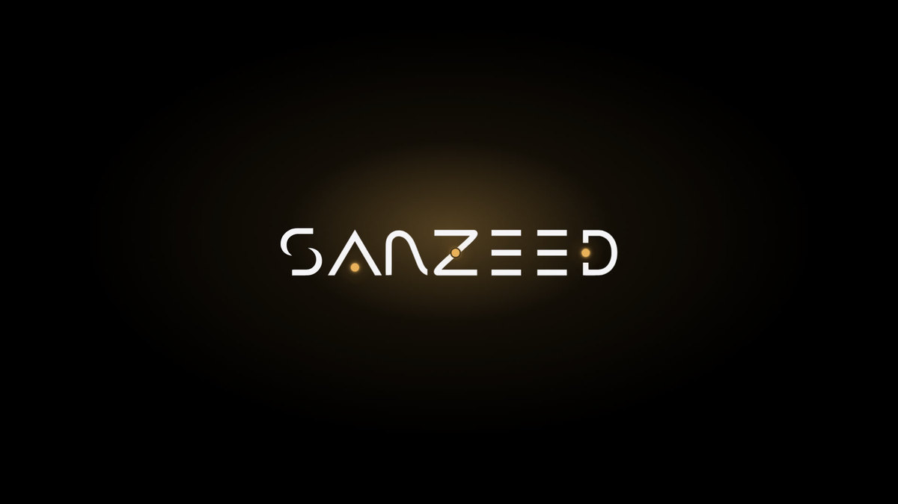
- One thing moves. A composition has one travelling element at a time — the point, the light, a line arriving. Letters, labels and lines follow the light.
- Left → right, top → down. The beam travels in reading direction; the lamp rises from above. Nothing enters from the right; nothing moves backwards.
- Arrive fast, settle long. The first 200 ms do most of the work; the rest is a settle the eye can rest on.
- Reveal by light. Things are not animated in; they are lit. A letter appears because the point passed it.
- Glow is gold and belongs to the point. Letters, type and photographs never glow, blur or cast coloured light.
- Holds are calm. Once arrived, nothing moves for at least 1.2 s before a piece ends. No idle motion, no floating, no slow zoom.
- Exits are quieter than entrances. 400 ms on --ease-in with a 12 px sink. Nothing flies out.
- Real copy, real rooms. Wall labels on every image; sentence-case headlines; one lit word at most.
Fast out, long settle.
Four curves; nothing else is used. The light curve carries the point across the wordmark S → E in about 0.5 s — leaving the A’s point as it passes and dropping the Z’s point into its ring — and spends the remaining 0.6 s arriving at the D’s point.
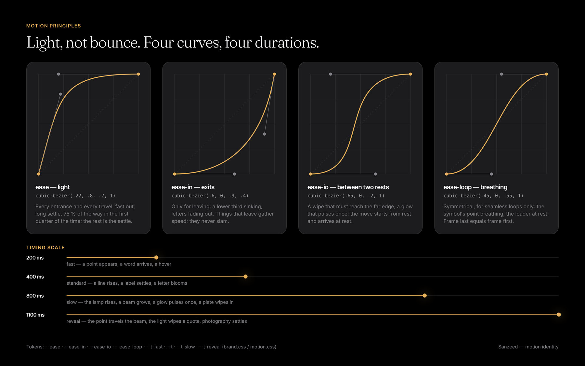
| Token | Curve | Character | Use |
|---|---|---|---|
| --ease | cubic-bezier(.22, .8, .2, 1) | Light. 75 % of the distance in the first quarter of the time; the rest is settle | Every entrance, every travel of the point. The default |
| --ease-in | cubic-bezier(.6, 0, .9, .4) | Gathers speed and leaves | Exits only |
| --ease-io | cubic-bezier(.65, 0, .2, 1) | From rest to rest | The transition wipe, a glow pulsing once, the signature drawing on |
| --ease-loop | cubic-bezier(.45, 0, .55, 1) | Symmetrical, sine-like | Seamless loops only: the symbol’s point breathing, the loader at rest |
Lottie: --ease as handles o {.22, .8} i {.2, 1}. GSAP: CustomEase.create("sz", ".22,.8,.2,1"); power3.out is the nearest built-in. After Effects: keyframe velocity influence 22 % / 80 % out, 20 % / 100 % in.
The letters are lit, not drawn.
Six key frames per piece from Exports/Key_Frames. Sources: Source_Files/logo-reveal/index.html (and index-light.html), logo-outro/index.html — CSS @keyframes, rendered deterministically by the kit’s capture_frames.js.
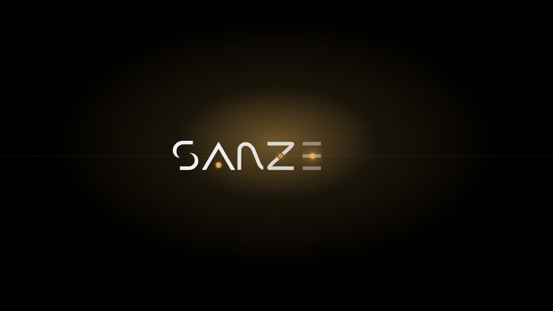
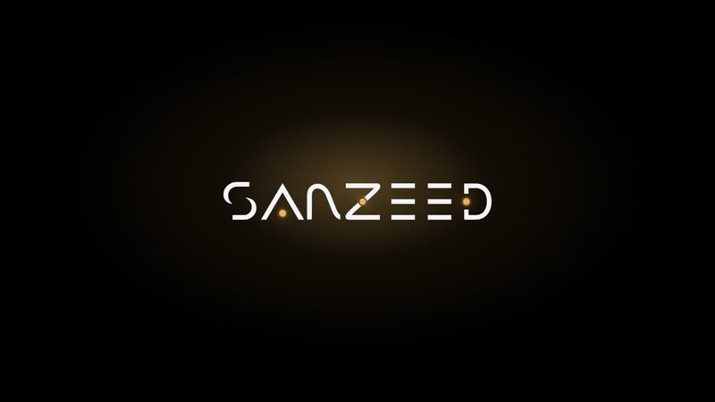
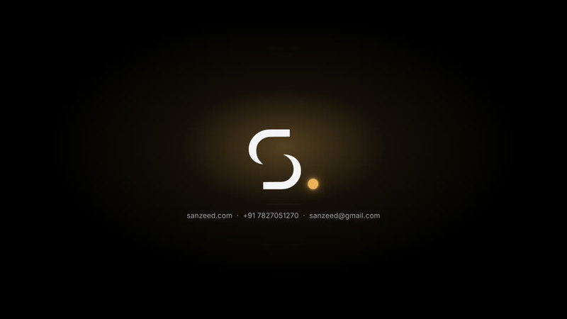
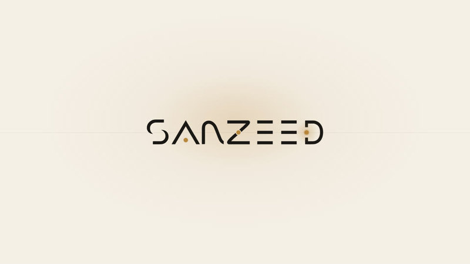
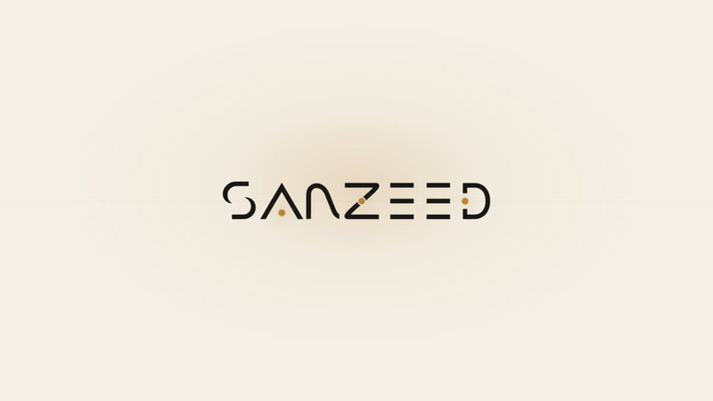
In, hold, out.
Three lower thirds with alpha, the branded intro and end card in 16:9 and 9:16, the beam-wipe transition and the website loader.


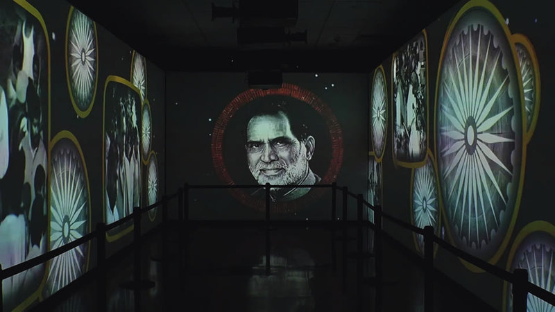
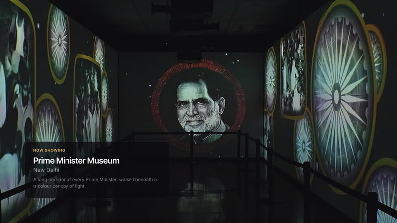


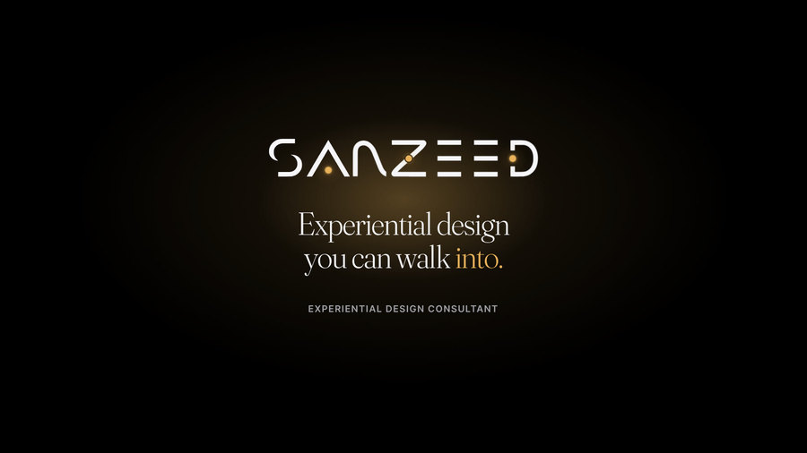


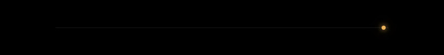
The wordmark is never transformed.
It may be revealed, and its points may glow; nothing else. Codecs: MP4 H.264 CRF 20 · WebM VP9 · MOV ProRes 4444 straight alpha · GIF ≤ 960 px · 30 fps · Rec. 709. Every piece honours prefers-reduced-motion.
| Rule | Detail |
|---|---|
| Never spin | No rotation of any letter, dot or lockup, on any axis — including the “3D flip” and the “card turn” |
| Never bounce | No overshoot, elastic or spring easing on the logo; the points settle from 1.6× to 1× on --ease |
| Never stretch | No non-uniform scaling, skew, perspective, liquid or morph; the uniform scale in the outro is the only scale permitted, and only of the symbol |
| The points may glow | The three points (A, Z, D) and the symbol’s point may carry the gold halo, pulse once (800 ms) and, in the symbol loop, breathe. Letters never glow |
| The Z’s ring stays open | No halo, glow, fill or travelling point is ever drawn inside it: every source masks the glow with #zring (r 45.5 → 58.9 units), so the background always shows through |
| Left → right | The travelling point leaves the S, passes through the Z’s ring and arrives at the D’s point; it never runs backwards |
| Revealed, not drawn | Letters bloom (opacity, 400 ms) behind the light; never stroke-drawn, typed, split into particles or masked with anything but a straight edge |
| One reveal per piece | An intro reveals it; an outro collapses it to the symbol. It never loops, flashes or re-enters |
| Pairing and clear space hold | full-colour-dark on dark, full-colour-light on Plaster; clear space kept at every frame, including the glow |
| The travelling point exists only in motion | r = 45 units (the size of the logo’s own points), Lamp Gold, 230-unit halo, at the height of the Z and D points; it never appears in a still |
| Deliverable | Pixels | Length | Formats |
|---|---|---|---|
| Logo reveal | 1920×1080 dark · light · 1080×1080 · 1080×1920 | 4 s | MP4 · WebM · GIF |
| Logo outro | 1920×1080 | 3 s | MP4 · WebM · GIF |
| Symbol loop · presentation logo | 1920×1080, transparent | 3 s · 4 s | MOV ProRes 4444 alpha · WebM alpha · MP4 / GIF on black |
| Intro / end card | 1920×1080 · 1080×1920 | 6 s | MP4 · WebM · GIF |
| Transition | 1920×1080, transparent | 1.5 s | MOV alpha · WebM alpha · MP4 preview |
| Stories · posts · stat counter | 1080×1920 · 1080×1080 | 6 s · 5 s | MP4 · GIF |
| Lower thirds | 1920×1080, transparent | 5 s | MOV alpha · WebM alpha · MP4 preview |
| Website loader | 480×48 · 960×120 | 2 s loop | CSS · SVG+SMIL · Lottie JSON · GIF · MP4 |
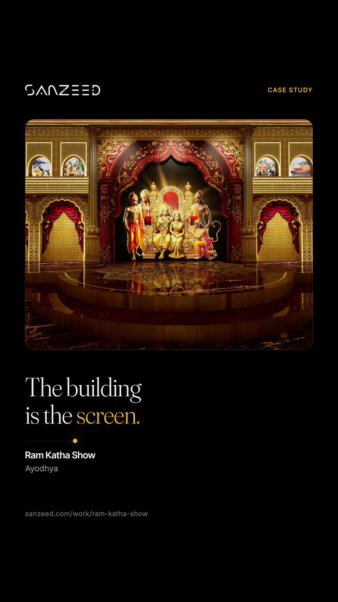
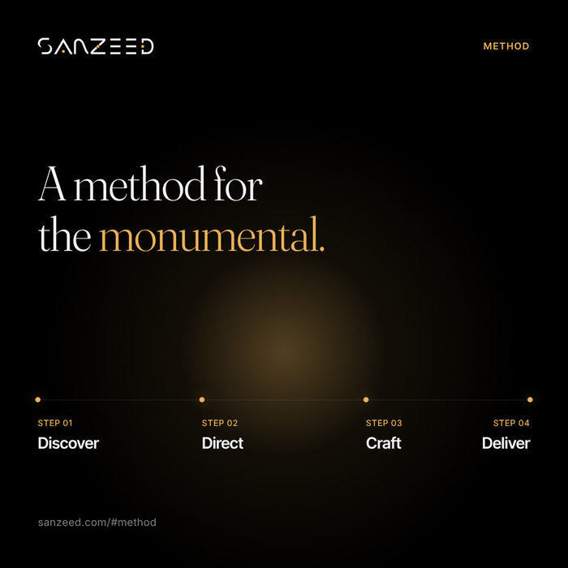

New logo animation must be one of the approved pieces or derived from Source_Files/logo-reveal/index.html with only timing changed. Lottie JSON for the reveal and the loader imports into After Effects.